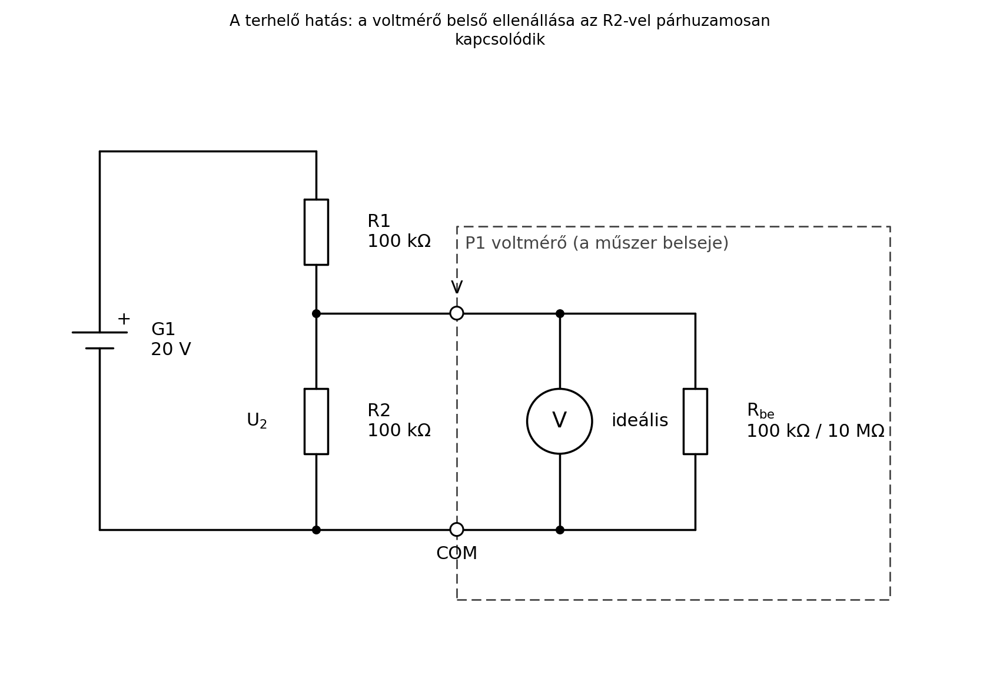

Számítás. Egy analóg feszültségmérő pontossági
osztálya 1,5, méréshatára 300 V. A
leolvasott érték 200 V.
Adott:
,
,
.
Keresett: A maximális abszolút hiba
()
és a relatív hiba
().
Képlet:
,
.
Behelyettesítés:
Eredmény: A mért érték
,
a hibahatár
,
így a valódi érték
.
Ellenőrzés: A relatív hiba
,
ami nagyobb, mint a
-os
osztály, mert a mutató nem a végkitérő közelében van.
Számítás. Mérjünk most 50 V-ot
ugyanezzel a műszerrel a 300 V-os és a 100
V-os méréshatáron.
-os
határon:
,
.
Ez nagyon rossz!
-os
határon:
,
.
Sokkal jobb.
Az alábbi ábra a két kidolgozott példa három beállítását ugyanazon az
1,5-ös osztályú műszeren mutatja: az 1. képen 200 V a 300 V-os határon,
a 2. képen 50 V a 300 V-os határon, a 3. képen 50 V a 100 V-os határon.
A sraffozott sáv a skála alsó harmada.
Statikus változat (mint a PDF-ben)
Méréshatár választása: a mutató helyzete és a relatív hiba
három beállításnál (sematikus rajz)
Figyeld meg, hogy az abszolút hibahatár a határral együtt változik
(4,5 V, illetve 1,5 V), a mért érték nem: ha a mutató az alsó harmadban
áll (2. kép), válts kisebb határra. A HTML-kiadásban a három beállítás
egymás után lejátszható.
Továbbvitt eredmény. A pontossági osztályból számolt
hibahatárt használjuk minden mérési jegyzőkönyvben. A Multiméter,
lakatfogó és mérési kategóriák (tankönyv, 8.2) alfejezetben ezt a
számítást alkalmazzuk a digitális multiméter specifikációjának
értelmezésére, az Oszcilloszkóp és jelalakok (tankönyv, 8.3) részben
pedig a jelalak-mérés bizonytalanságának becslésére.
8.1.2 Kidolgozott számítási példa:
terhelő hatás
Számítás. Egy feszültségosztó két
-os
ellenállásból áll
(),
és
tápfeszültséget kap. A cél az
ellenálláson eső feszültség
()
megmérése.
Az alábbi rajzon a P1 voltmérő belsejét is megmutatjuk: a szaggatott
keret a műszer határa, benne egy ideális (áramot nem felvevő) kijelző és
vele párhuzamosan a műszer
belső ellenállása. Amint a mérőzsinórokat az
két végére érinted, ez az
az
-vel
párhuzamosan „beül” az áramkörbe.

A terhelő hatás: a voltmérő belső
ellenállása az R2-vel párhuzamosan kapcsolódik - Valódi U2 = 10 V; R_be
= 100 kΩ (régi analóg) → 6,67 V; R_be = 10 MΩ (digitális) → 9,95
V.
A mérés pillanatában tehát az alsó ág eredője már nem
,
hanem
;
minél kisebb az
,
annál jobban lehúzza a mért feszültséget. Számoljuk végig a két
műszerrel!
Valódi érték (műszer nélkül):
Most feltételezzük, hogy egy régi,
belső ellenállású műszerrel mérünk. A műszer párhuzamosan kapcsolódik
-vel,
így az eredő ellenállás:
A mért feszültség:
A hiba:
,
relatív hibája
.
Ez katasztrofálisan rossz.
Ugyanez a mérés modern,
belső ellenállású műszerrel:
A relatív hiba már csak
körül van, ami az elektronikai hibakeresésnél általában elfogadható.
Továbbvitt eredmény. A terhelő hatás
figyelembevétele a Multiméter, lakatfogó és mérési kategóriák (tankönyv,
8.2) részben elengedhetetlen lesz, amikor nagy belső ellenállású
(például CMOS-os) áramkörök feszültségét mérjük, és amikor a
feszültségmentesség ellenőrzését végezzük.
8.1.3 Kidolgozott példa: két műszer
hibája egy eredményben
A szerelő gyakran két mért értékből számol egy harmadikat, például
teljesítményt
()
vagy ellenállást
().
A számolt eredmény hibája nem lehet kisebb, mint a kiinduló adatoké.
Számítás. Ohmos fogyasztón (például fűtőtesten)
mérünk. Digitális multiméter:
,
specifikáció
,
felbontás
.
Lakatfogó:
,
,
felbontás
(példaadatok).
,
azaz
;
,
azaz
;
;
legrosszabb esetben a relatív hiba
,
tehát
.
Jegyzőkönyvi alak:
.
∎
Szabály. Szorzásnál és osztásnál a
relatív hibák, összeadásnál és kivonásnál az
abszolút hibák adódnak össze (legrosszabb eset).
Figyelem: két közeli érték különbsége (például egy veszteség:
)
nagyon nagy relatív hibájú lehet, mert a különbség kicsi, az abszolút
hibák viszont összeadódnak.
8.1.4 Gyakorló: mérési hibák
feladatgenerátor
A hibaszámítás minden mérési jegyzőkönyv alapja, és a tipikus
tévedések – a hibát a mért értékre vetíted, rossz méréshatárt
választasz, elfelejted a digit-tagot, rossz ágra számolod a műszer belső
ellenállását – csak sok gyakorlással tűnnek el. A HTML-kiadás gyakorlója
három szinten ad feladatot: A – analóg műszer
hibahatára a pontossági osztályból és a méréshatár választása;
B – digitális multiméter
hibája a helyes jegyzőkönyvi alakkal, valamint a terhelő hatás
feszültségosztón; C – ellenállásmérés feszültség- és
árammérővel (feszültség- vagy áramhelyes kapcsolás, lásd fent). Az ábra
egy kidolgozott B-szintű feladatot mutat.
Statikus változat (mint a PDF-ben)
Mérési hibák feladatgenerátora: kidolgozott mintafeladat a
digitális multiméter hibahatárára
Figyeld meg a mintán, hogy a két hibatag közül a digit-tag
()
itt a teljes hibának csaknem hetede, és hogy a jegyzőkönyvbe a hibahatár
is csak a kijelző felbontásáig kerül. A HTML-gyakorlóban az „Új feladat”
gomb új adatokat ad, az ellenőrzés a tipikus hibákat név szerint jelzi,
a megoldás lépésenként megnézhető. Nyomtatásban az alábbi tíz feladatot
oldd meg, majd ellenőrizd a kulccsal.
Rögzített feladatsor. A T-H4-023 tíz feladata: 1–5.
analóg műszer (pontossági osztály és méréshatár), 6–8. digitális
multiméter ±(p % + n digit) specifikációval, 9–10. terhelő hatás
feszültségosztón (a műszer az alsó ellenálláson mér). A HTML-kiadás
gyakorlója ezekhez hasonló feladatokat ad végtelen számban, és a C
szinten az U–I módszert is gyakoroltatja.
(A) Egy 1,5 pontossági osztályú analóg
feszültségmérő 300 V-os méréshatárán 230 V-ot olvasol le. Mekkora a
legnagyobb abszolút hiba (εmax) és a relatív hiba (h)?
(A) Egy 1,5 pontossági osztályú analóg
feszültségmérő 100 V-os méréshatárán 60 V-ot olvasol le. Mekkora a
legnagyobb abszolút hiba (εmax) és a relatív hiba (h)?
(A) Egy 2,5 pontossági osztályú analóg
feszültségmérő 60 V-os méréshatárán 24 V-ot olvasol le. Mekkora a
legnagyobb abszolút hiba (εmax) és a relatív hiba (h)?
(A) Egy 1 pontossági osztályú analóg feszültségmérő
150 V-os méréshatárán 48 V-ot olvasol le. Mekkora a legnagyobb abszolút
hiba (εmax) és a relatív hiba (h)?
(A) Egy 0,5 pontossági osztályú analóg
feszültségmérő 30 V-os méréshatárán 12,6 V-ot olvasol le. Mekkora a
legnagyobb abszolút hiba (εmax) és a relatív hiba (h)?
(B) Egy digitális multiméter kijelzője 229,4 V AC;
az adatlap szerinti pontosság ezen a tartományon ±(0,8 % + 3 digit), a
felbontás (1 digit) 0,1 V. Mekkora a hibahatár (ε) és a relatív hiba
(h), és melyik a helyes jegyzőkönyvi alak?
(B) Egy digitális multiméter kijelzője 12,34 V DC;
az adatlap szerinti pontosság ezen a tartományon ±(0,5 % + 2 digit), a
felbontás (1 digit) 0,01 V. Mekkora a hibahatár (ε) és a relatív hiba
(h), és melyik a helyes jegyzőkönyvi alak?
(B) Egy digitális multiméter kijelzője 0,485 V DC;
az adatlap szerinti pontosság ezen a tartományon ±(1 % + 5 digit), a
felbontás (1 digit) 0,001 V. Mekkora a hibahatár (ε) és a relatív hiba
(h), és melyik a helyes jegyzőkönyvi alak?
(B) Feszültségosztó: U = 24 V, felül R1
= 47 kΩ, alul R2 = 47 kΩ. Az R2 feszültségét
Rbe = 1 MΩ belső ellenállású műszerrel mérjük. Mekkora a
valódi és a mért feszültség, és mekkora a relatív hiba?
(B) Feszültségosztó: U = 10 V, felül R1
= 10 kΩ, alul R2 = 10 kΩ. Az R2 feszültségét
Rbe = 20 kΩ belső ellenállású műszerrel mérjük. Mekkora a
valódi és a mért feszültség, és mekkora a relatív hiba?
Megoldókulcs.
A rögzített feladatsor megoldókulcsa
Feladat
Szint
Eredmény
1.
A
εmax = 4,5 V; h = 1,96 %
2.
A
εmax = 1,5 V; h = 2,5 %
3.
A
εmax = 1,5 V; h = 6,25 %
4.
A
εmax = 1,5 V; h = 3,13 %
5.
A
εmax = 150 mV; h = 1,19 %
6.
B
ε = 2,14 V; h = 0,931 %; jegyzőkönyvi alak = 229,4 V ± 2,1 V
7.
B
ε = 81,7 mV; h = 0,662 %; jegyzőkönyvi alak = 12,34 V ± 0,08 V
8.
B
ε = 9,85 mV; h = 2,03 %; jegyzőkönyvi alak = 0,485 V ± 0,010 V
9.
B
U2 (valódi) = 12 V; Um (mért) = 11,72 V; h =
−2,3 %
10.
B
U2 (valódi) = 5 V; Um (mért) = 4 V; h = −20
%
Kidolgozott megoldások.
Adott: k = 1,5 (pontossági osztály), Xvég = 300 V,
Xm = 230 V.
Az analóg műszer osztálya a méréshatár (végkitérés) százaléka:
εmax = k / 100 · Xvég.
εmax = 1,5 / 100 · 300 V = ±4,5 V.
h = εmax / Xm · 100 % = 4,5 V / 230 V · 100 % =
1,96 %.
A valódi érték 225,5 V és 234,5 V között van.
Adott: k = 1,5 (pontossági osztály), Xvég = 100 V,
Xm = 60 V.
Az analóg műszer osztálya a méréshatár (végkitérés) százaléka:
εmax = k / 100 · Xvég.
εmax = 1,5 / 100 · 100 V = ±1,5 V.
h = εmax / Xm · 100 % = 1,5 V / 60 V · 100 % = 2,5
%.
A valódi érték 58,5 V és 61,5 V között van.
Adott: k = 2,5 (pontossági osztály), Xvég = 60 V,
Xm = 24 V.
Az analóg műszer osztálya a méréshatár (végkitérés) százaléka:
εmax = k / 100 · Xvég.
εmax = 2,5 / 100 · 60 V = ±1,5 V.
h = εmax / Xm · 100 % = 1,5 V / 24 V · 100 % =
6,25 %.
A valódi érték 22,5 V és 25,5 V között van.
Adott: k = 1 (pontossági osztály), Xvég = 150 V,
Xm = 48 V.
Az analóg műszer osztálya a méréshatár (végkitérés) százaléka:
εmax = k / 100 · Xvég.
εmax = 1 / 100 · 150 V = ±1,5 V.
h = εmax / Xm · 100 % = 1,5 V / 48 V · 100 % =
3,13 %.
A valódi érték 46,5 V és 49,5 V között van.
A mutató a skála alsó harmadában áll: kisebb méréshatáron kisebb lenne a
relatív hiba.
Adott: k = 0,5 (pontossági osztály), Xvég = 30 V,
Xm = 12,6 V.
Az analóg műszer osztálya a méréshatár (végkitérés) százaléka:
εmax = k / 100 · Xvég.
εmax = 0,5 / 100 · 30 V = ±0,15 V.
h = εmax / Xm · 100 % = 0,15 V / 12,6 V · 100 % =
1,19 %.
A valódi érték 12,45 V és 12,75 V között van.
Adott: kijelzés 229,4 V AC, pontosság ±(0,8 % + 3 digit), 1 digit =
0,1 V.
A digitális műszer hibája két tagból áll: a leolvasott érték p %-a,
plusz n-szer a kijelző legkisebb helyiértéke (digit).
Első tag: 0,8 / 100 · 229,4 V = 1,835 V.
Második tag: 3 · 0,1 V = 0,3 V.
ε = 1,835 V + 0,3 V = ±2,135 V; h = ε / Xm · 100 % = 0,931
%.
Jegyzőkönyvi alak (a hibahatár a kijelző felbontására kerekítve):
229,4 V ± 2,1 V.
Adott: kijelzés 12,34 V DC, pontosság ±(0,5 % + 2 digit), 1 digit =
0,01 V.
A digitális műszer hibája két tagból áll: a leolvasott érték p %-a,
plusz n-szer a kijelző legkisebb helyiértéke (digit).
Első tag: 0,5 / 100 · 12,34 V = 0,0617 V.
Második tag: 2 · 0,01 V = 0,02 V.
ε = 0,0617 V + 0,02 V = ±0,0817 V; h = ε / Xm · 100 % = 0,662
%.
Jegyzőkönyvi alak (a hibahatár a kijelző felbontására kerekítve):
12,34 V ± 0,08 V.
Adott: kijelzés 0,485 V DC, pontosság ±(1 % + 5 digit), 1 digit =
0,001 V.
A digitális műszer hibája két tagból áll: a leolvasott érték p %-a,
plusz n-szer a kijelző legkisebb helyiértéke (digit).
Első tag: 1 / 100 · 0,485 V = 0,00485 V.
Második tag: 5 · 0,001 V = 0,005 V.
ε = 0,00485 V + 0,005 V = ±0,00985 V; h = ε / Xm · 100 % =
2,03 %.
Jegyzőkönyvi alak (a hibahatár a kijelző felbontására kerekítve):
0,485 V ± 0,010 V.
Adott: U = 24 V, R1 = 47 kΩ, R2 = 47 kΩ; a
műszer az R2-n mér.
Valódi érték (műszer nélkül): U2 = U · R2 /
(R1 + R2) = 12 V.
Méréskor az alsó ág eredője: R2 ∥ Rbe =
R2 · Rbe / (R2 + Rbe) =
44,89 kΩ.
Mért érték: Um = U · (R2 ∥ Rbe) /
(R1 + R2 ∥ Rbe) = 11,72 V.
Relatív hiba: h = (Um − U2) / U2 · 100
% = −2,3 % (a terhelés mindig csökkenti a mért feszültséget).
Adott: U = 10 V, R1 = 10 kΩ, R2 = 10 kΩ; a
műszer az R2-n mér.
Valódi érték (műszer nélkül): U2 = U · R2 /
(R1 + R2) = 5 V.
Méréskor az alsó ág eredője: R2 ∥ Rbe =
R2 · Rbe / (R2 + Rbe) =
6,667 kΩ.
Mért érték: Um = U · (R2 ∥ Rbe) /
(R1 + R2 ∥ Rbe) = 4 V.
Relatív hiba: h = (Um − U2) / U2 · 100
% = −20 % (a terhelés mindig csökkenti a mért feszültséget).
8.1.5 Gyakorlati útmutató:
méréshatár kiválasztása és a hiba becslése
Cél. Megtanulni egy analóg vagy digitális multiméter
helyes kezelését a pontossági osztály és a méréshatár
figyelembevételével.
Eszközök és anyagok: analóg mutatós voltmérő (pl.
1,5 osztály, 300 V végkitérő), digitális multiméter, egy 9 V-os elem,
egy 10 kΩ-os ellenállás, a mérésről jegyzőkönyv.
Biztonsági korlát. A feladat tanműhelyi környezetre
vagy jogosult oktató felügyeletére vonatkozik; hálózati feszültségen
önállóan ne végezz mérést.
Az öt biztonsági szabály (hálózati berendezésen
végzett munka előtt): 1. Leválasztás – minden pólus
lekapcsolása. 2. Visszakapcsolás elleni biztosítás –
lakat, tábla. 3. A feszültségmentesség megállapítása a
munkavégzés helyén, minden pólus között, kétpólusú
feszültségvizsgálóval; a vizsgálót előtte és utána ismert
feszültségforráson ellenőrizd. 4. Földelés és rövidre
zárás, ahol előírt, vagy visszatáplálás, indukált feszültség
veszélye áll fenn. 5. Szomszédos feszültség alatt maradó részek
lefedése, elkerítése.
A mostani gyakorlat törpefeszültségű elemen (9 V) történik, ezért az
öt szabály itt nem alkalmazandó (nincs mit feszültségmentesíteni); csak
a műszer ellenőrzését és a helyes funkció- és méréshatár-választást
gyakoroljuk. Hálózati berendezésen mindig az öt szabály szerint járj el,
jogosult személy felügyeletével.
Lépések:
Kapcsold be a műszert (ha digitális), és válaszd ki
a mennyiségnek megfelelő funkciót (V-DC vagy V-AC).
Válaszd a legnagyobb méréshatárt, ha nem ismered a
mérendő feszültséget.
Érintsd a mérőzsinórokat a mérendő ponthoz.
Olvasd le a kijelzőt (analógnál ügyelj a skálára és
a mutató tükörképére).
Ha a mutató a skála alsó harmadában van, válts egy
kisebb méréshatárra (pl. 300 V helyett 100 V-ra), hogy a pontossági
osztályból adódó relatív hiba csökkenjen.
Jegyezd fel a mért értéket, a méréshatárt, a műszer
típust és a becsült hibát.
Ellenőrzési pontok: a mért értéknek reálisnak kell
lennie. Ha például egy 9 V-os elemen 1,2 V-ot mérsz, akkor valószínűleg
túl nagy méréshatárt használsz, vagy a mérőzsinór szakadt.
8.1.6 Önellenőrzés
Igaz vagy hamis? A relatív hiba független a mért
értéktől.
Számítás. Egy 2,5-ös pontossági osztályú, 200 V
méréshatárú műszerrel 70 V-ot mérsz. Mennyi a maximális abszolút
hiba?
Számítás. Mi a relatív hiba a fenti példában?
Miért rossz régi analóg műszerrel nagy ellenállású
áramkör feszültségét mérni?
Melyik méréshatárt választod 45 V méréséhez, ha 100
V, 50 V és 20 V méréshatárok állnak rendelkezésre? Miért?
8.1.7 Feladatok
1. feladat (A) Határozd meg az abszolút és a relatív
hiba fogalmát.
2. feladat (A) Egy 1,5 osztályú voltmérő méréshatára
150 V, a leolvasott érték 90 V. Számítsd ki a maximális abszolút hibát
és a relatív hibát.
3. feladat (B) Egy feszültségosztóban
és
,
a tápfeszültség
.
A méréshez egy régi,
érzékenységű, 10 V méréshatárú analóg műszert használunk. a) Mekkora a
műszer belső ellenállása ezen a méréshatáron? b) Mekkora a valódi
feszültség az
-n?
c) Mekkora a terhelt feszültség (mért érték)? d) Mekkora a relatív
hiba?
4. feladat (B) Egy mérési feladatnál 30 V-ot várunk.
Rendelkezésre áll egy 0,5 osztályú műszer 100 V-os, 50 V-os és 20 V-os
méréshatárokkal. Melyik méréshatárt válaszd, és mekkora a hozzátartozó
maximális abszolút hiba és relatív hiba?
5. feladat (C) Egy hibakeresés során egy digitális
multiméter kijelzőjén 12,34 V olvasható. A méréshatár 50 V,
a műszer alap pontossága a mért értékre vetítve
,
a felbontásból adódó hibája pedig
digit. A jegyzőkönyvbe a tanuló 12,341729 V-ot ír. a) Írd
fel a hibahatárt a gyártói specifikáció alapján. b) Mi a baj a
jegyzőkönyv bejegyzésével?
6. feladat (D) Gyakorlati feladat: egy 9 V-os elem
feszültségét méred egy digitális és egy analóg műszerrel. A digitális
multiméter 9,40 V-ot mutat, az analóg műszer csak
8,7 V-ot. Magyarázhatja-e a különbséget a műszer terhelő
hatása? Számold ki a felvett áramot és a belső ellenálláson eső
feszültséget (az elem belső ellenállása kb.
,
az analóg műszer
-os
határán
),
és vesd össze az analóg műszer hibahatárával
(-es
osztály). Melyik műszernek hiszel inkább?
7. feladat (B) Egy
-os
ellenállást U–I módszerrel mérsz. Az ampermérő belső ellenállása
,
a voltmérőé
.
Számítsd ki a mért ellenállást és a relatív hibát feszültséghelyes és
áramhelyes kapcsolásban, és döntsd el a
szabállyal, melyik kapcsolást választod.
8. feladat (C) Feszültséghelyes kapcsolásban a
voltmérő
-ot,
az ampermérő
-t
mutat; a voltmérő belső ellenállása
,
az ampermérőé
.
a) Mekkora az
hányadosból számolt ellenállás? b) Mekkora a valódi
(vedd figyelembe a voltmérő áramát)? Mekkora volt a relatív hiba? c) Jó
kapcsolást választottál? Mekkora ellenállást mértél volna a másik
kapcsolásban?
9. feladat (B) Egy ellenállást U–I módszerrel mérsz:
(),
()
(példaadat). Add meg az
értékét a legrosszabb esetre vett hibahatárral (a bekötésből adódó
módszerhibát most hanyagold el)!
10. feladat (C) Hurokimpedancia-mérő kijelzése
,
,
felbontás
;
a megengedett legnagyobb érték (példaadat)
.
Megfelel-e a mérés eredménye?
Töltsd ki az alábbi táblázatot (nyomtatott példányban a füzetedben),
majd válaszolj: melyik sort mérnéd újra, és miért?
A 11. feladat kitöltendő űrlapja
Sor
Abszolút hibahatár
Relatív hiba
Jegyzőkönyvi alak
Megjegyzés
1
2
3
4
5
6
8.1.8 Megoldások
8.1.8.1 Önellenőrzés –
válaszok
Hamis. A relatív hiba a méréshatártól és a mért
értéktől függ. A műszer pontossági osztálya a méréshatár százaléka, ezt
osztjuk a mért értékkel.
.
.
Mert a műszer belső ellenállása a mért kör ellenállásához képest
kicsi, így leterheli az áramkört, és a mérési eredmény hamis, kisebb
feszültséget mutat.
Az 50 V-os méréshatárt, mert a 45 V közel van a
végkitérőhöz. A 100 V-os határon a mutató a skála felénél lenne, a
relatív hiba kétszeresére nő; a 20 V-os határ túlcsapódna.
8.1.8.2 Feladatok – megoldások
1. feladat (A) Az abszolút hiba a mért érték és a
valódi érték különbsége:
.
A relatív hiba ez a különbség a valódi (vagy mért) értékhez viszonyítva,
százalékban:
.
2. feladat (A) Adott:
,
,
.
Abszolút hiba:
.
Relatív hiba:
.
A valódi érték
.
3. feladat (B) a)
.
b)
.
c) A terhelt eredő:
.
Mért feszültség:
.
d) Relatív hiba:
.
4. feladat (B) A 100 V-os méréshatár hibája:
,
relatív:
.
Az 50 V-os méréshatár hibája:
,
relatív:
.
A 20 V-os tartomány túlcsapódik. Az 50 V-os tartományt választjuk, mert
ezen a határon a legkisebb a relatív hiba (a
-os
kitérés a skála felső kétharmadában van).
5. feladat (C) a) A specifikáció első tagja (a mért
értékre vetítve):
.
A digit hibája:
digit a kijelzőn a legkisebb helyiértéken
()
így
.
Összesített (pesszimista) hibahatár:
.
Tehát a valódi érték körülbelül
és
V között van. b) A helytelen bejegyzés: a műszer felbontása
,
tehát a 12,341729 V kiírás nem megengedhető, mert olyan
pontosságot sugall, amit a műszer nem tud. Helyesen 12,34 V
vagy 12,34 V ± 0,09 V.
6. feladat (D) Terhelő hatás: az analóg műszer
-os
határán
,
a felvett áram
,
a belső ellenálláson eső feszültség
.
Elemnél a belső ellenállás (néhány ohm) a műszer ellenállásához képest
elhanyagolható, ezért a terhelő hatás nem magyarázza a
-os
eltérést (ehhez kb.
belső ellenállás kellene:
).
Az analóg műszer hibahatára
-es
osztálynál,
-os
határon
;
a
ennél is nagyobb, tehát az analóg műszer rossz méréshatáron/skáláján
olvastál le, nincs nullázva, vagy hibás: ellenőrizd ismert feszültségen
(a terhelő hatás nagy belső ellenállású forrásnál, például a kidolgozott
példa
-os
osztójánál számít). A digitális műszernek hiszünk inkább, mert
pontossága és belső ellenállása
()
is kedvezőbb; kiürült elemnél a terhelt feszültség lehet a használat
közbeni valós érték.
7. feladat (B) Feszültséghelyes:
,
.
Áramhelyes:
,
.
Szabály:
;
mivel
,
a feszültséghelyes kapcsolást választjuk (a hibája
tízszer kisebb).
8. feladat (C) a)
.
b) A voltmérő árama
,
így az
árama
,
és
.
A relatív hiba
.
c) Nem:
,
a
ennél jóval nagyobb, ezért áramhelyes kapcsolás kellett
volna. Abban
,
a hiba csak
.
9. feladat (B)
;
a relatív hibák összege
,
azaz
:
.
10. feladat (C) A hibahatár
,
a sáv
.
A sáv teljes egészében a
alatt van: megfelel.
11. feladat (D)
A 11. feladat megoldókulcsa
Sor
Abszolút hibahatár
Relatív hiba
Jegyzőkönyvi alak
Megjegyzés
1
±0,15 V
1,6 %
9,1 V ± 0,15 V
–
2
±0,066 V
0,7 %
9,23 V ± 0,07 V
–
3
±0,035 V
1,1 %
3,07 V ± 0,04 V
–
4
±0,45 V
7,5 %
6,0 V ± 0,5 V
rossz méréshatár: 10 V-on ±0,15 V lenne
5
±0,91 mA
1,5 %
61,4 mA ± 0,9 mA
–
6
±0,012 W
0,7 % + 1,5 % = 2,2 %
0,567 W ± 0,012 W
számított érték
Újra a 4. sort kell mérni, a 10 V-os határon: a mutató a 30 V-os
határon az alsó harmadban áll, ezért nagy a relatív hiba.
8.1.9 A mérés fogalma és a mérési
hibák fajtái – példák és gyakorlók
Példa (leolvasási hiba). Egy analóg voltmérő skálája
-ig
van kalibrálva, de te a rossz skálát, a
-as
osztást nézed. A műszer így
-ot
mutat, holott a valódi érték
.